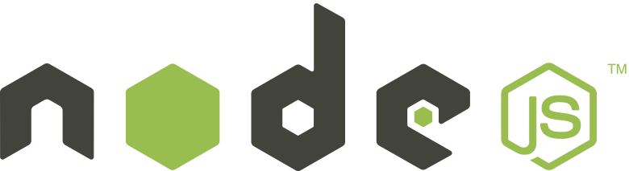
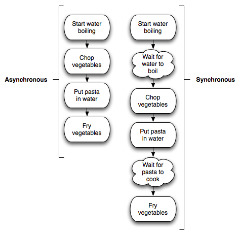
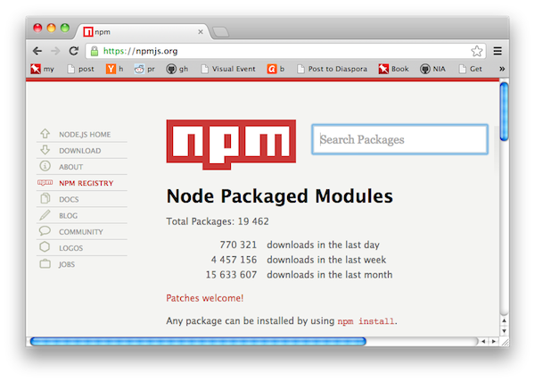

Getting Started
With Node.js
Mike Cantelon
April 18, 2012
Hi, I'm Mike

- Node.js enthusiast
- Co-author of "Node.js in Action"
- Develop open source digital archiving software for Artefactual Systems
- Like long walks on the beach and fire
- Believe that we can learn from animals if we listen to them with our hearts
What this talk will cover
- What is Node.js and why would I want to use it?
- How is developing in Node different?
- What does Node development look like?
- What tools and frameworks are available to extend Node's capabilities?
- Where can I find help?
What is Node.js and why would I want to use it?
Node.js aka Node is...
- A framework that allows applications to be written in JavaScript
- Built on Google's V8 JavaScript engine
- Cross-platform

I had a rather sudden epiphany that JavaScript was actually the perfect language for what I wanted: single threaded, without preconceived notions of "server-side" I/O, without existing libraries.
What makes Node different?
- Event-driven, single-threaded
- Minimalist API
- Thriving add-on ecosystem
What is Node best at?
-
I/O-bound applications
- HTTP applications
- Multi-user games and chat
- TCP/IP proxies
- TCP/IP protocol development
Control Arduinos with JavaScript...
...or infernal flying machines!
Who else uses Node?
-
Github
- project archive downloads
-
Craiglist
- SMTP delivery
-
Voxer
- smartphone VOIP app
-
Storify
- web application
How is event-driven programming different?
Event-driven programming characteristics
- Also called asynchronous programming
- You describe what should happen if an event occurs, but not the specific order in which events should occur
- Goal is to avoid CPU time spent waiting
- Most UI programming is event-driven
Cooking as a metaphor

What does event-driven programming in JavaScript look like?
JavaScript event-driven programming relies heavily on callbacks
- Callbacks are essentially logic given to a function as an argument
- It's easy to use functions as arguments in JavaScript
- Functions passed as arguments can either be named or anonymous
What a JavaScript callback looks like
someFunction(function(result) {
// callback logic
// does something
// with result
});
- someFunction spends time doing something
- One it's done it executes the function provided as an argument to it, providing its results as an argument
JavaScript callback examples
- Two callback examples: one using an anonymous function and one using a named function
setTimeout(function() {
console.log('I execute after a delay!');
}, 1000);
function displayMessage() {
console.log('I execute after a delay!');
}
setTimeout(displayMessage, 1000);
Event-driven application flow
- The script below shows how event-driven programs behave differently
- The built-in JavaScript function setTimeout executes a callback after a delay
- Note that the first argument given to setTimeout is an anonymous function
setTimeout(function() {
console.log('I execute next!');
}, 1000);
console.log('I execute first!');
Some confusion is normal
So what does programming in Node look like?
Installing Node is easy
- Standalone installers for Windows and Mac OS X
- Installers available at nodejs.org/#download
- On Mac, with homebrew, you can "brew install node"
- Compiling on Mac OS X (with XCode installed) and Linux is also straightforward
Node's REPL
After installing Node, you can start the REPL by entering the following into a command-line prompt.
$ node > ■
Then enter the following to make Node say its first words. CTRL-d to exit.
> console.log('Hello World!');
Hello World!
> ■
Running Node scripts
Node scripts require no boilerplate for displaying output.
Place the following code in a file named "hello_world.js".
console.log('Hello World!');
You can then run this script by entering the following into the command-line.
$ node hello_world.js
hello_web.js
In code below we require the "http" module.
We then create a server with it that will listen for HTTP requests on TCP/IP port 8888.
We use an anonymous function to specify what should be done with each request.
var http = require('http');
http.createServer(function (request, response) {
response.writeHead(200, {'Content-Type': 'text/plain'});
response.end('Hello Web!\n');
}).listen(8888);
Building a TCP/IP chat server
Building a chat server provides a more substantial example.
- Chat server should store information about each user connecting
- When a user disconnects we should delete this information
- When a user sends a message we should send it to all other connected users
- Along with the user's message we should display an identifier
chat_server.js (part 1 of 2)
var net = require('net')
, clients = {};
var server = net.createServer(function(conn) {
var id = conn.remotePort;
conn.on('connect', function() {
clients[id] = conn;
});
conn.on('data', function(data) {
broadcast(id, data);
});
conn.on('end', function(data) {
delete clients[id];
});
});
server.listen(3000);
chat_server.js (part 2 of 2)
- "broadcast" function relays messages to every client but the sender
function broadcast(fromId, message) {
// if a message, not a control key, has been sent, broadcast it
if (message.toString().slice(-1) == "\n") {
// send to each client except sender
for(var id in clients) {
if (fromId != id) {
clients[id].write(fromId + '> ' + message);
}
}
}
}
Streams
- Node excels in I/O and I/O is usually represented by streams
- Streams are implemented using what are called "event emitters"
- Event emitters deal with various types of events and can send and receive data
# dealing with data from a stream
someStream.on('data', function(data) {
# do something with data
});
Buffering from stream
- Common technique
- Con: requires storing all chunks of data in memory until all chunks read
# dealing with data from a stream
var chunks;
someStream.on('data', function(data) {
chunks = chunks + data;
});
someStream.on('end', function() {
# do something with chunks
});
Piping
- Higher-level way to deal with chunked data
- Less memory usage than naive buffering
Echo server example:
var net = require('net');
var server = net.createServer(function (c) {
c.write('Hello!\r\n');
c.pipe(c);
});
server.listen(8124, 'localhost');Johnny Five Arduino example
var five = require("johnny-five"), board, led;
board = new five.Board();
board.on("ready", function() {
led = new five.Led({
pin: 13
});
led.on();
led.off();
this.wait( 3000, function() {
led.on();
});
});
What tools and frameworks are available to extend Node's capabilities?
The Node package manager is super useful
- NPM comes bundled with Windows and Mac OS X standalone installers
- Can install modules into an application or make them available globally
- Application-specific installation of modules allows you to install specific versions
- Global install is useful for installing command-line tools written using Node
Search npm via npmjs.org
Installing and publishing modules with NPM
An example installation of a module:
$ npm install socket.io
When publishing a module, you must include a "package.json" file that specifies the module's name, version, etc.
An example of publishing a module:
$ npm publish
Data storage
Modules exist in NPM that allow Node to interface with common data stores.
- MySQL
- PostgreSQL
- MongoDB
- Redis
- SQLite
- etc.
Flow control tools
In normally asynchronous development events can occur in unpredictable sequences.
Tools exist to force asynchronous code to execute either in parallel or sequentially.
These tools are often called "flow control" tools.
Flow control example
var flow = require('nimble');
flow.series([
function (callback) {
setTimeout(function() {
console.log('I execute first.');
callback();
}, 1000);
},
function (callback) {
setTimeout(function() {
console.log('I execute next.');
callback();
}, 500);
}
]);
Some useful Node modules
| n | CLI tool to switch between Node versions |
| express | Minimalist web framework |
| socket.io | Client/server websockets support |
| mongoose | MongoDB-backed data store |
| nimble | Flow control |
| mocha | Unit testing |
| tobi | Functional web testing |
Quick notes on production deployment
Node hosting
- Pretty standard: run one or more Node instances and keep them up
- Runs fine on bare metal, VPS, cloud instances
- Some hosting companies like Nodejitsu and Heroku offer easy, Node-specific deployment
Application control/uptime
- Use Upstart scripts to manage the starting/stopping of Node applications
- "Forever" is a quick way to keep a Node app running
- Monit provides a more robust way to keep Node running
- Tools like Fleet can allow you to easily deploy new code to multiple servers
Leveraging multiple cores
- Max server performance by runing one app instance per core
- Node has an API for this: the "cluster" API
- Redis is often used to share data between instances
Serving static assets
- Nginx is better than Node at serving static assets
- By proxying Node through Nginx you can get the best of both worlds
Resources
| nodejs.org | Node downloads and documentation |
| search.npmjs.org | Search NPM repository |
| webchat.freenode.net | Web interface to #node.js IRC channel |
| Google Group | Online support |
| howtonode.org | Blog with tutorials |
| Node Up | Podcast featuring discussion among Node developers |
Questions?
Twitter:
@mcantelon
Forum:
tinyurl.com/nodeinaction
Slides:
mikecantelon.com/talks/vhs-node